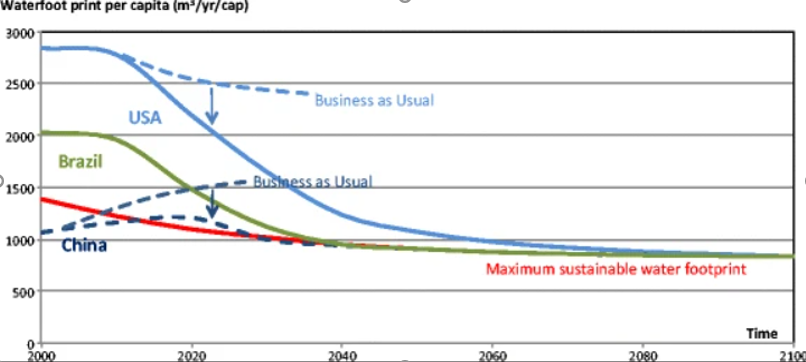

Water Footprint Assessment: Evolvement of a New
Research Field
Problem:
The field of WFA (Water Footprint Assessment) is built on four fundamental ideas:
- The first is the notion that freshwater is a global resource, because people in one location may and do use freshwater resources elsewhere through VWT (Virtual Water Trade).
- The second notion is that because freshwater renewal rates are limited.In a larger sense, while analysing the environmental sustainability of economies, it is vital to investigate human consumption's 'footprint' in regard to planetary limitations.
- The third premise is that in order to comprehend natural resource usage and consumption implications, we must think in terms of supply chains and product life cycles.
- The fourth notion is to take a holistic approach to freshwater usage and shortage, we must address both green and blue water use consumption as well as water pollution.
Process/Conceptualisation and Importance of WFA:
The process includes four steps: setting scope of analysis, accounting, sustainability assessment, and response formulation.
The first WF research estimated the WFs of national consumption for the majority of the world's countries.Following an initial research by SABMiller and WWF-UK, WF studies from particular corporations began to appear. Future energy scarcity will basically be a scarcity of land and water, hence energy's land and water footprints will be key to future energy study.
In the hypothetical event where fairness is regarded as an equal water share for every world citizen, this would suggest a massive WF reduction challenge for nations with existing WFs that are higher than the average as in the United States Fig. WF research has resulted in talks on water-use efficiency from three main perspectives: production,commerce and consumption.Future WFA research will most likely focus on concerns about WF sustainability, equality, and efficiency.
The WF and VWT ideas have proven useful in gaining insight into water consumption along supply chains and identifying crucial hotspots.Critical thinking leads to the conclusion that VWT is not a panacea; that it would or could be is an unusual assumption from the outset.
As with water quality, location-specific environmental flow requirements must be developed; based on such standards, blue WF caps per basin may be codified, which might translate into a maximum volume of WF permits to be granted.
Impact/Conclusions:
- The new field of WFA's innovation is in bringing fresh insights to water management. For starters, it brings a global perspective to attempts to study patterns of water consumption, pollution, and shortages.
- WFA paves the door for an examination of the most basic driving factor behind water pollution and shortage issues, namely consumption.WFA has integrated supply-chain thinking into water management, introducing additional relevant parties into the analysis.
- Whereas traditional water management has focused on how governments can best govern public resource water within catchments given competing water users and interests within the catchment, WFA demonstrates the importance of other actors (consumers, companies, investors), many of whom appear to be unconnected to the catchment.
- The company's real pollution contribution While WFA is founded in globalisation and the sustainability of footprints and supply chains, its evolution has also contributed to these bigger fields of thought.
- WFA is novel for business in that it shifts the focus from internal operations to the supply chain.More progress in WFA will be required to deepen the knowledge of how diverse parties may contribute to forms of water governance that incorporate the critical criteria of environmental sustainability, social equality, economic efficiency, and supply security.